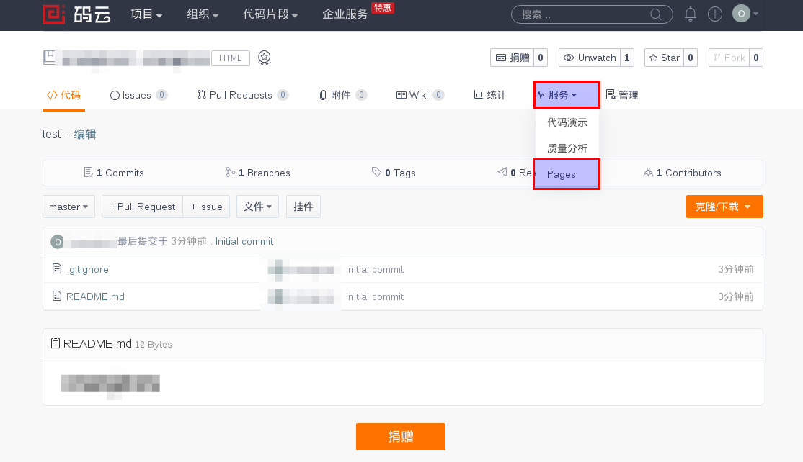

安装Node
到官网下载Node，我下载的是长期支持版。
下载地址解压，,解压路径随意，我的解压路径是（/home/orangice/applications)
建立软链接
1
2
3
4# ln -s /home/orangice/applications/node-v6.10.0/bin/node /usr/local/bin/node
# ln -s /home/orangice/applications/node-v6.10.0/bin/npm /usr/local/bin/npm
# node --version //如果输出版本号，则成功
# npm --version //如果输出版本号，则成功
安装Hexo
安装Hexo
1
2
3
4# npm install -g hexo-cli
# hexo --version
如果提示未找到hexo命令，则需要建立软链接
# ln -s /home/orangice/applications/node-v6.10.0/bin/hexo /usr/local/bin/hexo建立站点
1
2# cd ~
# hexo init blog
配置
Hexo站点配置
- 官方文档
个人配置，仅供参考
1
2
3
4
5
6
7
8
9title: Orangice
author: orangice
language: zh-Hans
post_asset_folder: true
timezone: Asia/Shanghai
deploy:
type: git
repo: https://gitee.com/orangice/orangice.git
branch: master在配置分类页面时打不开，通过以下方法解决，标签也同样可以通过一下方法解决
1
2
3
4
5
6
7
8cd blog
hexo new page categories
进入source/categories
修改index.md如下
#---
#date: 2018-01-04 22:04:23
#type: "categories"
#---
Next主题配置
-
1
2$ cd your-hexo-site
$ git clone https://github.com/theme-next/hexo-theme-next themes/next 简单配置，仅供参考
1
2keywords: "orangice, Orangice"
since: 2017详细配置，请参考官方文档，非常详细官网在此
托管平台配置
进入码云（是不是有点熟悉，但不是那个…）,这是开源中国的项目托管平台，国外有GitHub,由于在国外，速度慢。注册帐号，注意之后要去邮箱激活帐号。
创建仓库，看图
安装Hexo部署插件，在博客目录下输入一下命令，然后配置站点配置文件
1
2
3
4
5
6npm install hexo-deployer-git --save
以下是站点配置
deploy:
type: git
repo: https://gitee.com/orangice/orangice.git
branch: master进入博客目录，输入”hexo d”
写文章
- 生成器，生成文章
- 服务器，在本地生成服务器进行测试
- 部署，将文章部署到托管平台